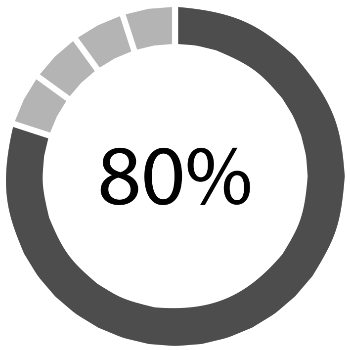
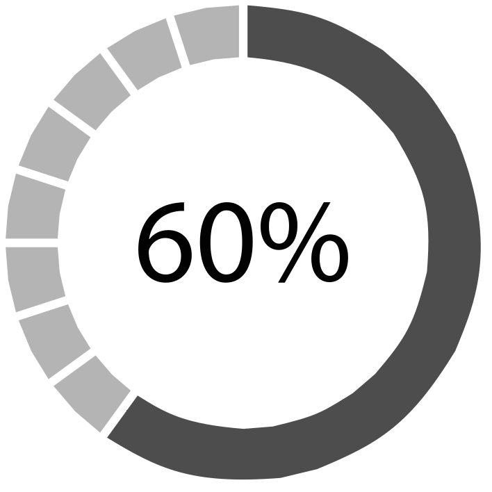
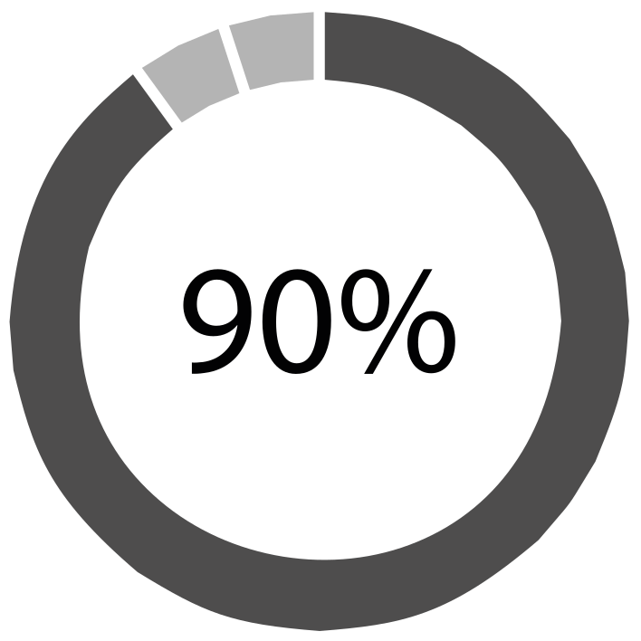

Johan Steven Aparicio
BSc. Statistics
Universidad del Valle (2014-2019)
Senior Research Associate - CIAT
Cali - Colombia
BSc. Statistics
Universidad del Valle (2014-2019)
Senior Research Associate - CIAT
Cali - Colombia
Experience
-
Lecturer - Universidad del Valle
April 2022 - Present
Design and Analysis of Experiments for Statisticians. -
Research Associate - CIAT
Oct 2020 - Jan 2022
Phenotypic Data Analysis / GS / Mixed Models / DOE / Genetic Gain -
Research Assistant - CIAT
Feb 2019 - Oct 2020
MET / Factor Analytic Models / GS / Experimental Design -
Internship Trainee - CIAT
Ago 2018 - Feb 2019
Spatial Analysis in Agriculture (ASReml-R/SpATS)
Skills
-

Shiny -
R Programming -

CSS / HTML
-

ASReml R -
Mixed Models -
LaTeX
Publications
-
May 2022
Genetic analysis of resistance to bean leaf crumple virus identifies a candidate LRR-RLK gene. -
April 2022
Improving association studies & genomic predictions for climbing beans with data from bush bean populations. -
March 2021
FielDHub: A Shiny App for Design of Experiments in Life Sciences.
-
March 2021
Genetic Analyses and Genomic Predictions of Root Rot Resistance in Common Bean Across Trials and Populations.
-
February 2021
Genetic Architecture and Genomic Prediction of Cooking Time in Common Bean (Phaseolus vulgaris L.).
-
July 2020
Genomic Prediction of Agronomic Traits in Common Bean (Phaseolus vulgaris L.) Under Environmental Stress.
-
July 2019
MrBean: Web Application for Spatial Modelling of Field Trials.
Develoments and Contributions
R-Packages
MrBean
Mr.Bean is an easy-to-use R-Shiny web-app that simplifies the analysis of large-scale
plant breeding experimental analysis by using the power and versatility of Linear Mixed Models (LMM).
This app combines the analytical robustness and speed of ASReml and SpATS with the visual power offered by R.
AparicioJohan/MrBeanApp
FielDHub
A shiny design of experiments (DOE) app that aids in the creation of traditional, un-replicated,
augmented and partially-replicated designs applied to agriculture, plant breeding, forestry, animal
and biological sciences.
DidierMurilloF/FielDHub
agriutilities
agriutilities is an R package designed to make the analysis of field trials easier and more accessible
for everyone working in plant breeding. It provides a simple and intuitive interface for conducting
single (STA) and multi-environmental trial analysis (MET), with minimal coding required. agriutilities is the ideal
choice for anyone who wants to save time and focus on interpreting their results.
AparicioJohan/agriutilities
QBMS
Linking data management systems to analytics is an important step in breeding digitalization.
Breeders can use this R package to Query the Breeding Management System (s) like BMS, BreeBase,
and GIGWA (using BrAPI calls) and help them to retrieve phenotypic and genotypic data directly
into their analyzing pipelines developed in R statistical environment.
icarda-git/QBMS
Summary
Overview current activities.
- DOE:Planning and Designing Experiments.
- Field Trials:Single Trial Analysis - Multi-Environmental Trial Analysis - Stability.
- LMM:Repeated Measurements - Random Coefficient Regression - Variance-Covariance.
- GS:BGLR - GAPIT - sommer - ASReml - rrBLUP.
- Web-Apps:Shiny Apps - Docker Images - html - css
- GG:Predicted & Realized Genetic Gain Estimation.
- Reports:Rmarkdown - Interactive plots - Web-Pages.
- DATA:Breeding Management Systems - APIs
Meetings and Conferences
-
September 2022
XVIIITH Eucarpia Biometrics in Plant Breeding Conference. Paris-France. Attendee. -
April 2022
Title: "Mixed Model Methods". Breeding Scheme Design Methods Training. Texcoco-Mexico. -
November 2020
Title: ''MrBean: A web application to simplify the analysis of plant breeding trials experiments using spatial analysis''. ASA, CSSA & SSSA Annual Meeting.
-
October 2020
Title: ''MrBean: A web-app to facilitate analysis of large scale plant breeding experimental trials''. Big Data in Agriculture. Convention 2020 . CGIAR.
-
October 2020
Title: ''MrBean: An R-shiny Web Application for the Analysis of Plant Breeding Experiments''. Friday Hands-On Workshop Series.
-
July 2019
Title: ''Predicción de la precipitación en el departamento del Valle del Cauca a partir de información satelital''. XXIX International Statistics Symposium. Universidad del Norte.
-
July 2019
Title: ''Web Application Developed for Spatial Modelling of Field Trials''. XXIX International Statistics Symposium. Universidad del Norte.
-
November 2018
II Colombian Congress of Statistics. Cali-Colombia. Attendee.
Areas of future focus & Improvement
-
Improve my skills in Quantitative Genetics.
-
Learn more about polyploids crops.
-
Create and implement new algorithms.
-
Develop analytical tools and packages that integrate genomic information applied to polyploid.
After this...
-
Leading a biometrics team.
-
Professor, DOE, Mixed Models, Statistical learning.
-
Quantitative genetics expert.
Thank You
Johan Aparicio